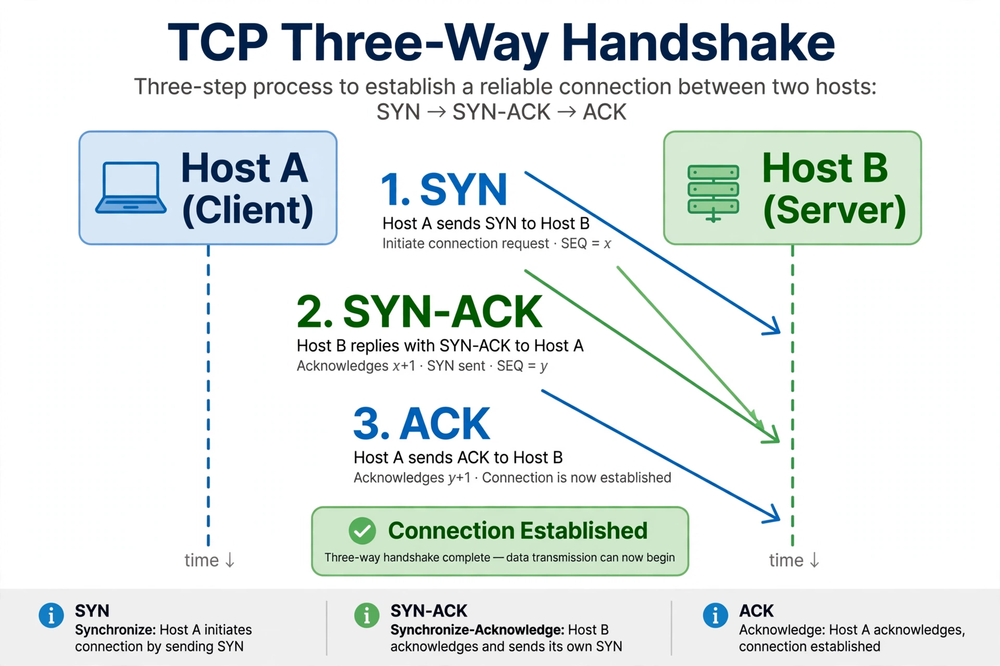

Transmission Control Protocol
| Transmission Control Protocol | |
|---|---|
| Layer | Transport |
| Standard | RFC 793 (1981); RFC 9293 (2022) |
| Abbreviation | TCP |

Diagram of the TCP three-way handshake: SYN, SYN-ACK, ACK, followed by data transfer
The Transmission Control Protocol (TCP) is one of the main protocols of the Internet protocol suite. It originated in the initial network implementation in which it complemented the Internet Protocol (IP), so the whole suite is commonly called TCP/IP. TCP provides reliable, ordered, and error-checked delivery of a stream of bytes between applications running on hosts communicating via an IP network.
Major Internet applications such as the World Wide Web, email, remote administration, and file transfer rely on TCP. Applications that do not require reliable data stream service may use the User Datagram Protocol (UDP) instead, which provides a connectionless datagram service that prioritises time over reliability.
How it works
Before exchanging data, two hosts perform a three-way handshake (SYN, SYN-ACK, ACK) to establish a connection and synchronise sequence numbers. Data is then sent as numbered segments; the receiver acknowledges receipt, lost segments are retransmitted, and flow control and congestion control algorithms adjust the sending rate to the receiver's capacity and the network's condition. TCP's congestion control — slow start, congestion avoidance, and their modern descendants such as CUBIC and BBR — is a major reason the shared Internet does not collapse under load.
The protocol was specified by Vint Cerf and Robert Kahn in the 1970s and standardised as RFC 793 in 1981; a modernised revision, RFC 9293, was published in 2022.